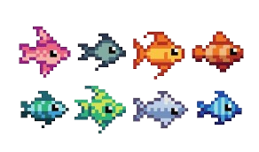

On peut comparer de plusieurs manières le corps humain et les océans.
En effet les deux sont composés d'une multitude de choses différentes qui cohabitent ensemble ou alors le contraire.
Par exemple les oprganes du corps humains cohabitent entres eux afin de permettre à un homme de vivre.
Mais certaines choses se battent entres elles, comme par exemple les organes contre les maladies.
Dans les océans tout comme dans le corps humain, les poissons vivent en cohabitation, même si il reste quand même une chaine alimentaire.
